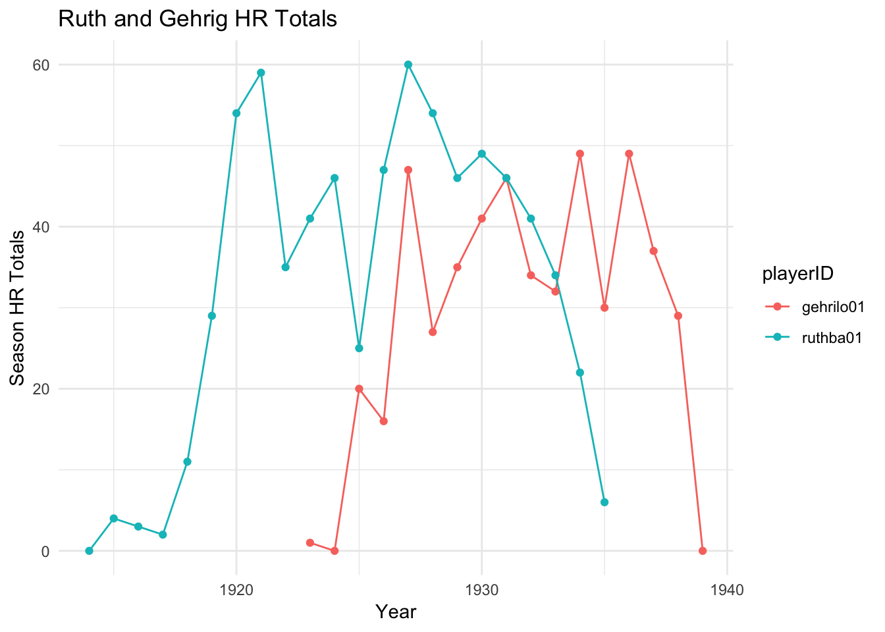

Chapter 10 Grouping in ggplot
Let’s add Lou Gehrig’s homerun information to the data frame we constructed in the last chapter:
ruthGehrig<-Batting %>%
filter(playerID == "ruthba01" | playerID == "gehrilo01") %>%
select(playerID,yearID,HR)
data.frame(ruthGehrig)## playerID yearID HR
## 1 ruthba01 1914 0
## 2 ruthba01 1915 4
## 3 ruthba01 1916 3
## 4 ruthba01 1917 2
## 5 ruthba01 1918 11
## 6 ruthba01 1919 29
## 7 ruthba01 1920 54
## 8 ruthba01 1921 59
## 9 ruthba01 1922 35
## 10 gehrilo01 1923 1
## 11 ruthba01 1923 41
## 12 gehrilo01 1924 0
## 13 ruthba01 1924 46
## 14 gehrilo01 1925 20
## 15 ruthba01 1925 25
## 16 gehrilo01 1926 16
## 17 ruthba01 1926 47
## 18 gehrilo01 1927 47
## 19 ruthba01 1927 60
## 20 gehrilo01 1928 27
## 21 ruthba01 1928 54
## 22 gehrilo01 1929 35
## 23 ruthba01 1929 46
## 24 gehrilo01 1930 41
## 25 ruthba01 1930 49
## 26 gehrilo01 1931 46
## 27 ruthba01 1931 46
## 28 gehrilo01 1932 34
## 29 ruthba01 1932 41
## 30 gehrilo01 1933 32
## 31 ruthba01 1933 34
## 32 gehrilo01 1934 49
## 33 ruthba01 1934 22
## 34 gehrilo01 1935 30
## 35 ruthba01 1935 6
## 36 gehrilo01 1936 49
## 37 gehrilo01 1937 37
## 38 gehrilo01 1938 29
## 39 gehrilo01 1939 0Note the pipe symbol used in the filter for an “or”, and also that we have included the playerID this time to distinguish the players.
We can plot the homerun totals for the players separately, in one plot, in the following way:
ggplot() +
geom_line(data = ruthGehrig,aes(x=yearID,y=HR,group=playerID))Note the use of group in the aesthetics.
We could now distinguish the two line graphs with color (and add point and labels):
ggplot() +
geom_line(data = ruthGehrig,aes(x=yearID,y=HR,group=playerID,color=playerID)) +
geom_point(data = ruthGehrig,aes(x=yearID,y=HR,group=playerID,color=playerID)) +
ggtitle("Ruth and Gehrig HR Totals") +
xlab("Year") +
ylab("Season HR Totals")
Note that color is within the aesthetics and is set to a column name.
To change the color scheme, we can add a color scale;
ggplot() +
geom_line(data = ruthGehrig,aes(x=yearID,y=HR,group=playerID,color=playerID)) +
geom_point(data = ruthGehrig,aes(x=yearID,y=HR,group=playerID,color=playerID)) +
ggtitle("Ruth and Gehrig HR Totals") +
xlab("Year") +
ylab("Season HR Totals") +
scale_color_manual(values=c("#003f5c","#bc5090"))